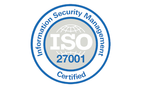

ISO 27001:2022 Critical Controls Decoded
In this webinar the host, Saloni Vijay, discussed the importance of ISO 27001:2022 and how it can help. It discussed topics like Understand the updated framework and its significance in contemporary information security landscapes. Gain clarity on the core critical controls outlined in ISO 27001:2022 and their practical applications. Our guest speaker from Vodafone Group will share real-world experiences and lessons learned in implementing ISO 27001:2022. Discover how adherence to ISO 27001:2022 can enhance your competitive edge and meet regulatory requirements. Salonie Vijay is the current Vice President and CISO at _VOIS, Vodafone Group. She has over 20 years of experience in the field of cybersecurity. Personnaly I found this webinar very interesting and I learned a lot from it. I would recommend it to anyone.
